We can divide user-defined types into types that contain a single value, called scalar types, and types that combine multiple data items into a larger unit, which are generally known as structured types.
The Weekday user-defined type picture to the right
is an example of a scalar type that contains only a
single simple value, while the Date type illustrated
here is a structured type, consting of a month, day and
year.
All of the built-in, primitive data types—int, char,
boolean and double—are scalar
data types. Java's class types, such as String,
are structured types.
In addition to the built-in primitive types, Java lets you define your own scalar type, called an enumerated type. Let's look at a situation where having your own user-defined scalar types like this would be really useful.
The Need for Enumerated Types
Do you remember how to create a font? You use one of the
Font constructors, like this example from
Unit 7:
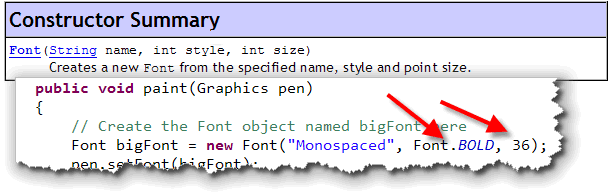
When you call theFont constructor, you pass three
parameters. The last two parameters, style and
size are both of type int.
When you use this constructor, instead of passing an arbitrary
int for the style, you'll use one of the predefined
Font class constants, like Font.PLAIN
or Font.BOLD. That causes two problems, however:
- Because both the second and third parameter are type
int, the compiler can't warn you if you accidentally switch the order of the parameters, like this:
Font bigFont = new Font("Monospaced", 36, Font.BOLD);
- You don't even get a runtime error, like you do if
you pass an "out of range" int to the
Colorconstructor. All you get is itsy-bitsy font in an unknown style. (That's because the actual value used forFont.BOLDis simply the integer 1. (Font.PLAINis the value 0, whileFont.ITALICis the value 2). When we pass 64 to the second (style) parameter, it's simply ignored, since it is a validintvalue.
Things would be a whole lot better if we could rewrite the
Font constructor so that the second parameter was
a different type entirely, something like this:
Font(String name, FontStyle style, int size)
Then, if we called the constructor with the parameters in the wrong order, the compiler would tell us that we'd made a mistake, just as if we tried to use an integer for the font name.
Unfortunately, it's too late for the Font class,
which was developed before the Java language permitted user-defined
enumerated types. Your programs and classes don't have to
suffer in this way though.
Let's look at the process for creating Java's enum
types.
Creating Enumerated Types
To create your own scalar, enumerated types in Java, you have to do two things:
- Supply a name for your new type in an
enumdefinition. The syntax for this is very similar to aclassdefinition. - Provide a list of all possible values that the type can contain. These are not integer literals, but names that represent the different values a variable could take on.
Rather than walking through all of the enumeration syntax, let's create a
simple, reusable composite class that represents playing cards. As we walk
through the development of this class, you'll learn about some alternatives
to enumerations, and then see how to create your own enum
type, step-by-step.
The PlayingCard Class
To create our class we'll use inheritance
(from the GCompound ACM class), along with composition,
(combining two GImage objects for the front or back of the card).
This part is pretty much review. Using Eclipse, you can:
- create a new class
- extend
GCompound - add two
GImageinstance variables (faceandback) - and write a constructor that initializes the face and back and adds them to the surface of the component.
Here's what your code should look like after doing that:
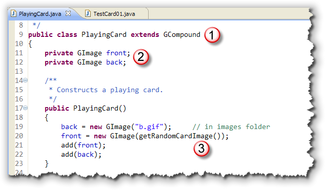
Notice how:- Inheritance is used to extend the
GCompoundclass - Composition is used to add the two
GImageobjects as parts of thePlayingCard. - The constructor initializes both of the parts and adds them to the surface of the new component, with the back of the card lying on top of the front of the card.
This simple starter class uses a "starter version" of a private
method named
getRandomCardImage() to pick one of the playing card images I've
placed in the project's images folder. Here's what that method looks like:
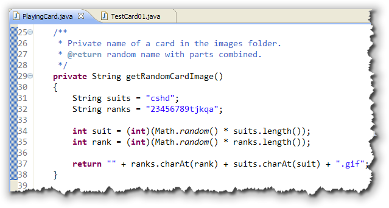
This starter method first creates twoString variables,
representing the characters in the suits and the ranks.
Then, I pick one random character from each String and
combine it with the file extension ".gif" to pick the random
card image.
Here's a test program (TestCard01)
that shows how to use the new class to add a single card to the center of an application.
If you're following along, you can use this to test your new class at this
point.
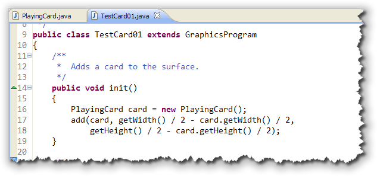
Of course, thePlayingCard class doesn't really do much
yet. The cards just sort of lie there, with the back covering up the card's
face. Before we start adding methods to make these PlayingCard
objects act more like real playing cards, we want to think a little
bit about how to make them more accurately represent real playing
cards.
What we reallly have now, is a class that contains playing card pictures.
We need a class that encapsulates the essense of both the state
and behavior of a playing card—not simply a class that looks like a playing
card—before we can start writing games that use the PlayingCard
class.
Representing Cards
What really isthe essense of a playing card? Is it the picture? No, not really. You may have seen card games that are purely text based.
Instead of the image, the essential part of a playing card is the two data elements that make up its state. A standard playing cards (using the so-called French deck you're all familar with), belongs to one of four suits: Clubs, Spades, Hearts and Diamonds.
Each card also has a value, called its rank. The rank of a set of cards consist of the numbers two through ten as well as the "face cards": Jack, Queen, King, and Ace. (We'll just ignore the Joker for right now.)
The new idea we want to look at is how best to represent the suit and rank
in each of our new PlayingCard objects.
The String Option
One possibility is to use String variables to represent the
two data elements like this:
Then, when you wanted to create a PlayingCard object, you'd use
a working constructor, like this:
PlayingCard card = new PlayingCard("Ace", "Spades");
And, the code in the PlayingCard working constructor would
look up the correct image to use based on the values passed when creating
it like this:
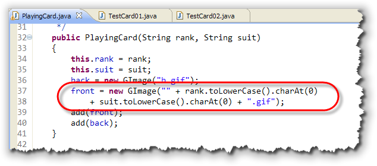
The only problem with this, is that the class is extremely fragile. What happens if the person using your card class types either of these instead?
PlayingCard card2 = new PlayingCard("2", "Dimonds");
PlayingCard card3 = new PlayingCard("10", "Cubs");
PlayingCard card4 = new PlayingCard("Spades", "Queen");
- In the first case, the filename "2d.gif" is generated correctly, but a misspelled suit name is stored in your instance variable. The constructor displays your image alright, but the object is really in an inconsistent state, since other methods may count on having the suit names spelled correctly.
- In the second case, the suit is again misspelled. Also, this time, the generated filename is "1c.gif" which isn't one of the names of our card image files. The Java compiler doesn't warn us that this is a problem, though, since all the compiler checks is the type of the parameters. This generates a runtime error.
- The same problem occurs with
card3. Since both parameters are the correct type, it doesn't notice that you've actually switched the parameter order, even though you've spelled each one correctly. The resulting filename, "sq.gif" doesn't match the expected "qs.gif" and you get an error:
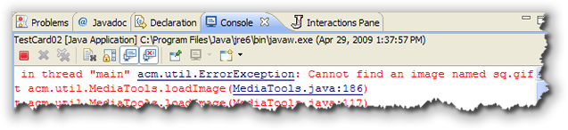
The important point to notice about this, is that using String
variables to represent rank and suit always
defers error checking to run-time, even if you add error-checking
code to your program.
You can download
TestCard02.java if you are making these changes to your
PlayingCard class as you read
the lesson, and you want to try them out.
The static int Option
Another favorite way to represent these kinds of types is to use
class constants, which is certainly better than using
String variables.
With class constants, you define a public static final
field for each field you want to represent like this:
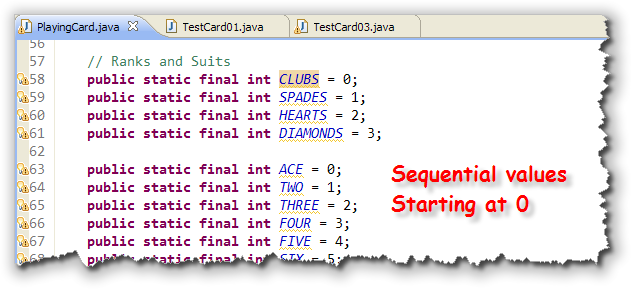
The constants are defined as consecutiveint values,
starting at 0. The rank and suit fields
are both changed from String to int, and
inside the constructor, a private method named
getCardImage() is used to grab the image based
on the values stored in the fields suit and rank
like this: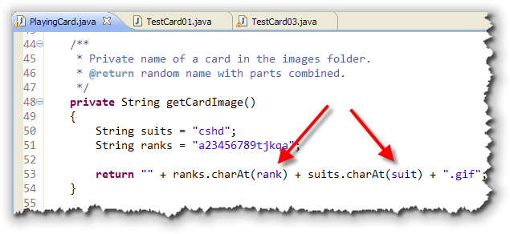
Since the values forsuit are 0 to 4, you can use them to index
into the String variable named suits and return
the corresponding character to build the resulting filename. Getting the
character for the rank works similarly.
Creating Cards
When calling the PlayingCard constructor using this new
scheme, the user passes the class constants instead of typing in
the String literals.
Using constants like this is much better because:
- The compiler notices if you misspell a constant name, and
- The Eclipse IDE knows about the constants, and pops up a tooltip
help when you try to create a new
PlayingCard object.
Nevertheless, there are still a few drawbacks, as you can see from
these examples:
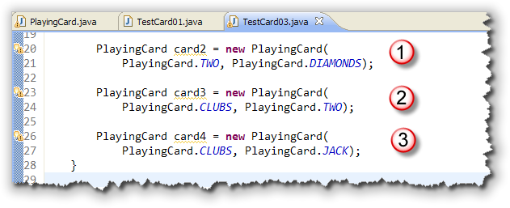
- This first example works perfectly.
- This case doesn't cause a compiler or a runtime error.
It does contain a logic error though. Because the range for the
suits runs from 0 to 4 and the range for the ranks runs from 0 to 13,
there are certain values that overlap. In this example, the rank
and suit parameters are interchanged. Because both are
intparameters, though, this doesn't cause a compiler error. Because both values used here are inside the ranges for both suits and ranks, it also doesn't cause a runtime error. The only problem is, you aren't getting the card that you expect! - Finally, because the range for ranks and suits are different,
it's possible to interchange them inadvertently, and end up with a
runtime error, as in this example. Of course, that really is
better than
card3, where you might never notice the error at all!
You can download
TestCard03.java if you are making these changes to your
PlayingCard class as you read
the lesson, and you want to try them out.
The enum Solution
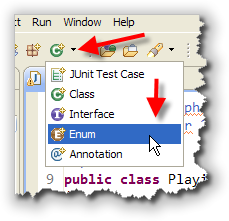
Although bothStrings and class constants can be
used to represent a set of specific values with a fixed range,
a much better solution to this problem is to use Java's
enumerated type facility to create a new, single-valued type
for both suits and ranks. This will allow the compiler to warn you
about all of the errors that our earlier versions let slip through.
To do that, first create a new class in Eclipse, but, instead of just pressing the "new class" button, click the little down-arrow beside it, and choose Enum from the drop-down menu.
On the New Enum Type Wizard screen, just fill in the name
(Suit), click the Generate comments checkbox, and
press the Finish button:
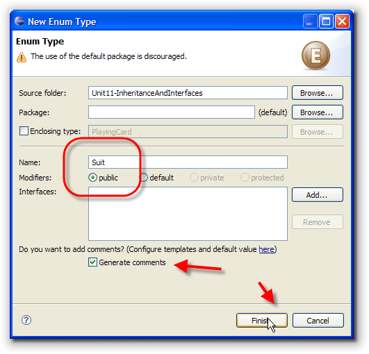
Specifying Values
Inside the enum definition, instead of adding fields
and methods, you simply provide a list of named values, each
one separated by commas. Here is what the body of Suit enum
looks like, with the four members added:
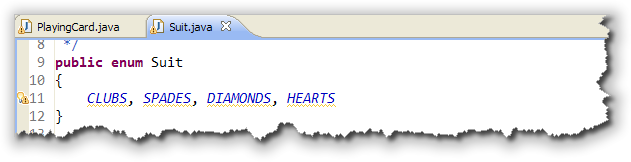
When you define the values for the new type:- Each value is not a
String. Notice that there are no quotes around the names. In this caseCLUBSis a value literal, just like 3 is a literal value in theinttype. - Each value is not a field or instance variable. You don't
give values to the
enummembers; the members are values. - Notice that there are no access modifiers. All enumerated
values are implicitly
public. - By convention, since enumeration members represent constant values, the member names are usually capitalized.
You don't need to end the list with a semicolon, but you can. It's actually a good habit to get into, since you do need the semicolon if you want to create more advanced enumerated types with methods and constructors (which we won't do here; read the Java tutorial online if you are interested.).
Javadoc
You'll probably notice the little Checkstyle warning next to the
list of members in my example. Because the members are public,
you should document each one with a Javadoc comment. There
are no special comment tags, though, so the easiest layout looks
like this:
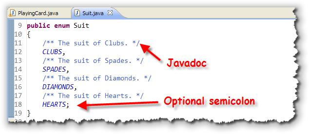
Using the Suit Type
Here are some of the ways you can use the new Suit type.
First, you can create new variables, and assign values to the
variable like this:
Suit s; // an enum variable
s = Suit.HEARTS; // assign a value to the variable
As you can see, the varible s is declared just like an
int or double variable. When you assign
a value to the variable, you can't use int or
String values, though; you must use one of the
values defined in the Suit type, and nothing else.
As you can see, to use one of the values, you use its
fully-qualified name, such as Suit.HEARTS.
Comparing Suit Values
You can use the equality operators (== and !=)
to compare Suit values and variables. You cannot use
the inequality operators, >, >=,
< or <=. Here's how you'd use
the equality operators, assuming the Suit variable
s has been defined and initialized:
if (s == Suit.CLUBS) ...
Switching on Suit Members
One of the neat things about enumerated types is that enum
variables can be used as switch selectors, like
this:
switch(s)
{
case CLUBS:
// case block bodies not shown
case SPADES:
case DIAMONDS:
case HEARTS:
}
Notice that when you do this, you don't have to use the
fully-qualified name for the members of the enumeration; just using
the Suit variable as the switch selector
is enough to qualify the case labels.
Member Order
Just as with the built-in types, char and int,
the enumerated types that you create are also ordinal; that means
that each member has a particular position or order in
the list of values.
To find the ordinal value for a Suit variable, you call it's
built-in ordinal() method. This means that even though you
can't use the greater-than or less-than operators with enum
variables, you can compare those variables's ordinal values like
this, assuming that s and c are initialized
Suit variables:
if (s.ordinal() > c.ordinal)
You can also use the ordinal value as an index or subscript for an array, like this:
String[] descriptions = { "Clubs", "Spades", "Diamonds", "Hearts" };
String suitDesc = descriptions[s.ordinal()];
The values() Array
Finally, each enumerated type has a built-in method named values
that returns an array containing each of the members. You can use that
like this:
Suit[] suits = Suit.values(); // array of all suits
int len = suits.length; // number of members in the enumeration
for (Suit s : suits); // loop through all members in array
The Rank Enumerated Type
To complete our PlayingCard class we'll need a separate enumeration
for the playing card ranks. Let's just call it Rank. Follow the
same steps you did for Suit, using members TWO,
THREE, and so on. Notice that you can't use numbers,
like 2 as an enumeration member.
You can download the finished enumerated types, Rank.java and Suit.java by clicking the links in this sentence, but you should probably type them in yourself, just to get the practice.
Finishing PlayingCard
OK, now let's finish up our basic playing card class. Start by
changing the instance variables, suit and rank
to Suit and Rank enumerated types, like
this:
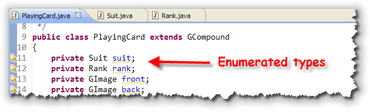
Next, change the working constructor, so that the two parameter variables use the enumerated types, instead ofint or String
like this: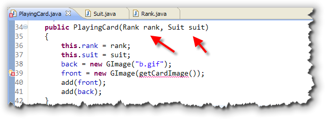
In my case, I commented out thegetCardImage() method, since it
used String, and then int values for the suit
and rank. With the method commented out, though, the constructor
shows an error, so let's tackle that method next. Here's what the modified
getCardImage() method should look like: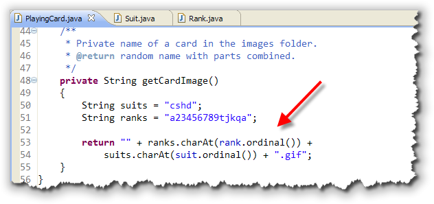
As you can see, this is almost identical to the previous version of the method. The only difference is that theordinal() method is
used as the index to the charAt() method used to construct
the file name.
The big difference, though, is that now, because of the addition of
enumerated types, you can't get a runtime error (unless you don't have
the card images available, of course). All typing errors will be cause by
the Java compiler instead
You can download the finished PlayingCard class, along with another simple test program, TestCard04.java, by clicking the links in this sentance, so you can run the programs on your own computer. You'll also need the playing card images, placed in a folder named images in the project, as well as acm.jar for the program to run.
Coming Up . . .
In this lesson, you learned how to create your own user-defined, scalar types by using the Java enum facility.
In the last lesson this week, we'll return to the topic of inheritance, and look at abstract classes and I'll introduce you to interfaces.